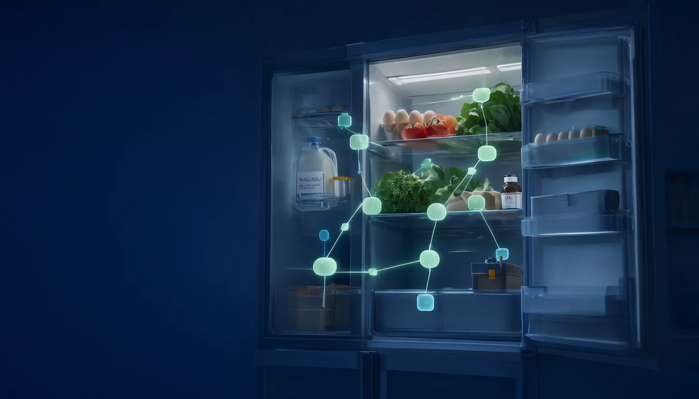
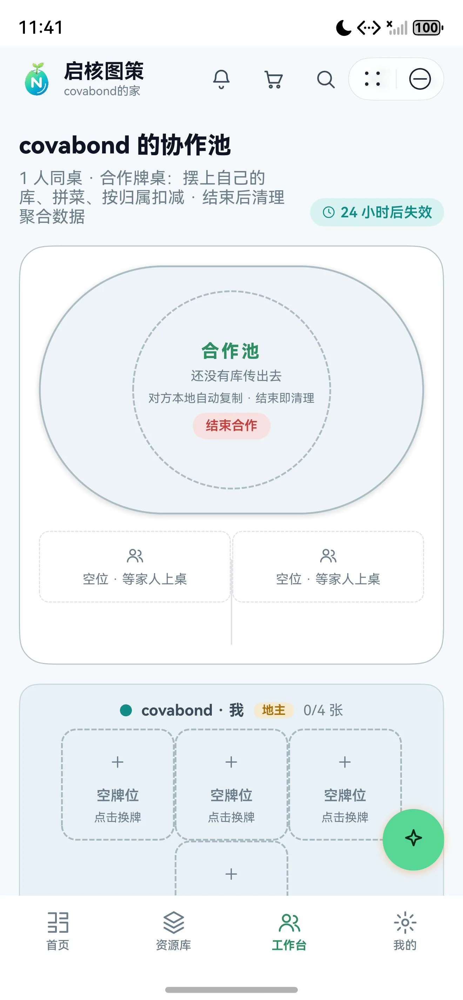
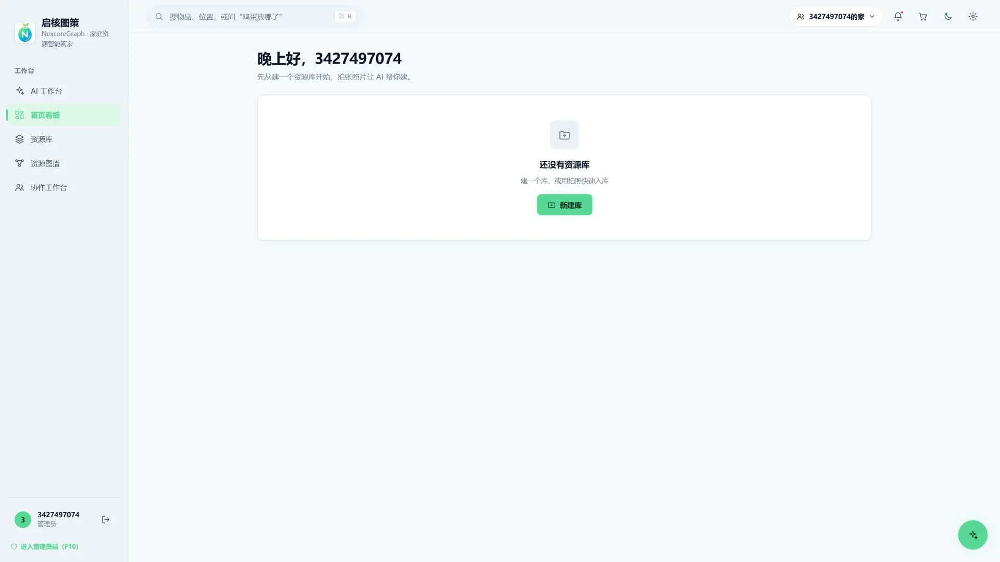
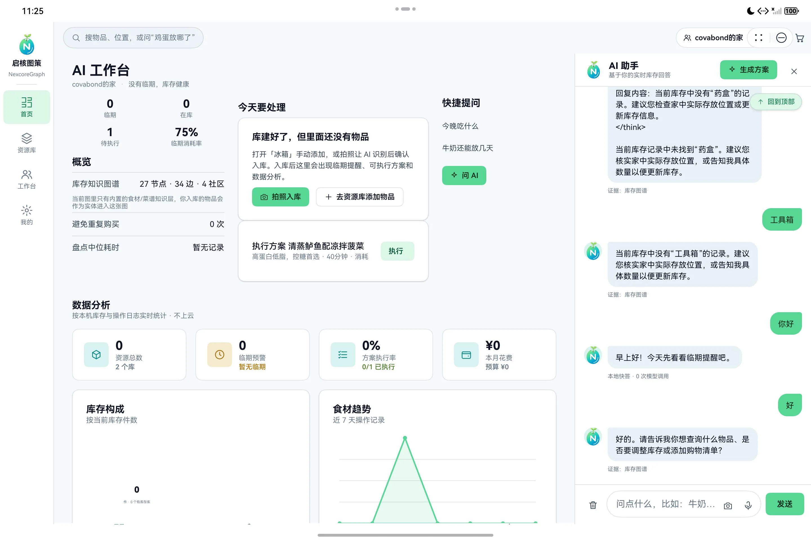
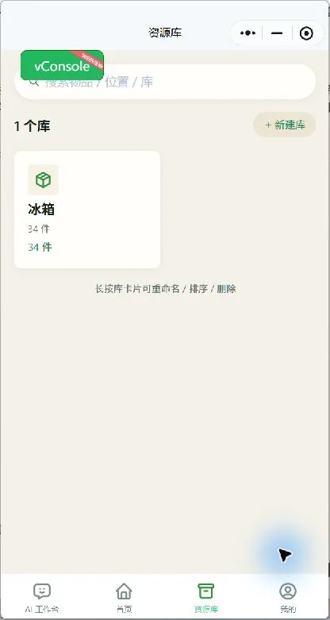

拍一张照片，
让家里的东西开始被记住。家里从此被记住。
启核图策把冰箱、药箱、衣柜和工具箱变成可查询、可推理、可协作的家庭资源库。AI 负责理解，代码负责事实，你负责最后确认。

东西明明在家里，
信息却散在生活里。
过期发生在冰箱深处，重复购买发生在路上，找工具发生在最着急的时候。启核图策先解决“记录”这一步，再把记录变成下一步行动。
食材、药品、耗材散落在不同房间，也散落在不同人的记忆里。
快到期的东西没有被优先使用，采购清单又看不到家里已有的数量。
一个人买回来，另一个人也在买；谁改过库存，没人说得清。
从镜头，到行动。
每一步都能回到真实界面。切换场景，查看当前产品如何完成入库、问答、图谱与协作。
先看见，再开始管理。
识别名称、数量、位置与保质期，缺的字段由你补齐。确认之前，没有任何内容会被写进库存。
- 输入
- 拍照或相册
- 处理
- 视觉识别与结构化
- 边界
- 用户确认后入库
问候、位置、数量、保质期等 4 类问题由本地规则直接回答，断网也能继续。
调整库存、加入采购与执行方案都进入待确认队列，并可撤销。
端侧不携带厂商密钥；主备模型自动降级，429 限流快速切换。
牛奶还能放几天？
冷藏区还有 2 瓶牛奶，按当前期限估算还能放 4 天。建议优先饮用，或做番茄牛奶蛋。
值来自库存与知识库，措辞由模型组织。每一条回答，
都能回到你的库存。
启核图策把物品、位置、期限、菜谱与采购关系构造成个人资源图谱。local、global、multi-hop 三种检索模式，让答案既能看眼前，也能沿着关系继续追问。
同一份家，
在每块屏幕上继续。
鸿蒙端原生体验、Web 管理视图与微信小程序轻量入口共用同一套数据契约。改动先落本机，再通过版本号同步；冲突让用户做决定。



功能之外，
把工程事实也摆出来。
页面上的数字来自当前工程与测试记录。真实设备接续、服务卡片尺寸与后端能力仍需按运行环境复核。
- 意图路由
- 11类
- 后端端点
- 29个
- 图谱本体
- 13/14节点 / 边
- 构图实测
- 66ms
- 多端落地
- 7秒内
- 提交前检查
- 11 / 11项通过
高频事实由代码直答，其余问题进入受约束生成。
账号、家庭、同步、AI、图谱与管理接口共用一套契约。
覆盖家庭资源从实例到概念、方案与操作日志的关系。
32 节点、41 边、3 社区，构图过程不调用模型。
同账号设备修改后自动拉取，按 id 原地合并。
覆盖密钥、权限、知识库、卡片、图谱与 AI 网关。
模型识别依赖自建后端配置；系统应用接续、双设备同步与四张服务卡片应在 HarmonyOS 真机上逐项复核。官网只展示已有工程与记录，不把待测项写成已测结论。
把启核图策带回你的设备。
鸿蒙 HAP 为未签名开发验证包；Windows 安装包用于桌面端体验。下载前请确认设备与运行环境。